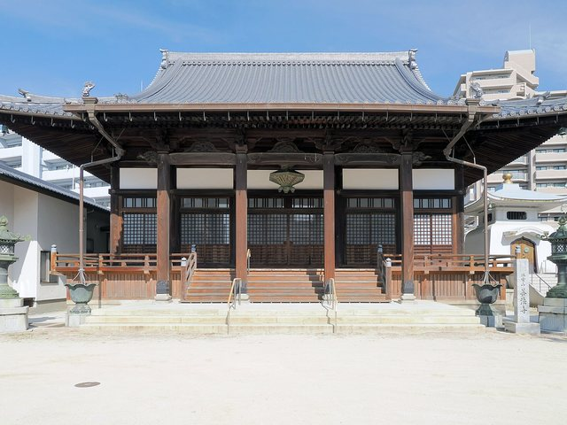
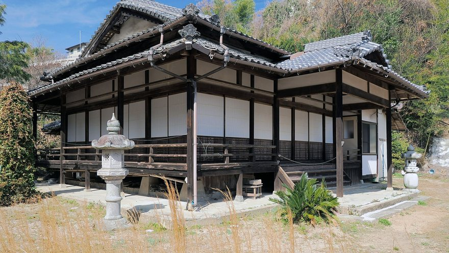
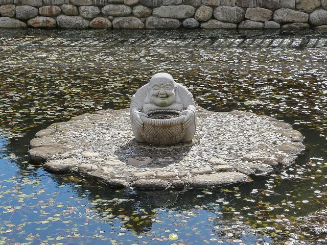
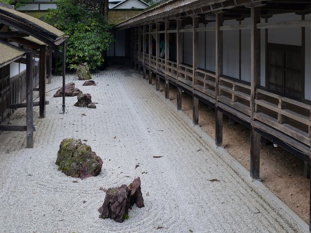

この写真のまま使えます（差し替えも自由）一
法事・ご葬儀
四十九日、年忌法要、ご葬儀。お布施の目安は下の表に載せています。急なご葬儀は、時間を問わずお電話ください。

室町期の開山と伝わる寺です。法事やご供養のこと、お墓のこと。檀家でない方も、どうぞご相談ください。
SERVICES
法事、ご葬儀、永代供養。急なことでも、まずはお電話ください。

この写真のまま使えます（差し替えも自由）四十九日、年忌法要、ご葬儀。お布施の目安は下の表に載せています。急なご葬儀は、時間を問わずお電話ください。

この写真のまま使えます（差し替えも自由）後を継ぐ方がいなくても、当山が代わってご供養を続けます。合祀と個別、それぞれのかたちをご用意しています。

この写真のまま使えます（差し替えも自由）毎月第2土曜の朝に坐禅会を開いています。初めての方には、座り方からご説明します。
ABOUT
法事もご葬儀も、檀家でない方からのご相談をお受けしています。
釈迦如来。本堂は江戸期の再建と伝わります。
山門から本堂まで、段差なくお参りいただけます。
MESSAGE
当山は室町期の開山と伝わる寺です。
供養のかたちは、家ごとに違っていいと考えています。できること、できないことを含めて、率直にお話しします。
山門はいつも開いています。お参りだけでも、どうぞ。
INFORMATION
| 寺号 | 杜光寺（とうこうじ） |
|---|---|
| 宗派 | 単立 |
| 御本尊 | 釈迦如来 |
| 開山 | 室町期と伝わる |
| 住職 | 杜 道円 |
| 所在地 | 〒350-0000 埼玉県川越市○○1-2-3 |
| 受付 | 9:00〜17:00（法要中は折り返します） |
| 駐車場 | 30台 |
GUIDE
目安を、先にお伝えします。
「わからないまま包む」という不安を無くしたいので、目安を表にしています。ご事情に合わせてご相談ください。
| 年忌法要（お布施の目安） | ◯◯,◯◯◯円〜 |
|---|---|
| ご葬儀（お布施） | ご相談ください |
| 永代供養（合祀） | ◯◯◯,◯◯◯円 |
| 永代供養（個別・十三回忌まで） | ◯◯◯,◯◯◯円 |
| 坐禅会 | 無料 |
| 御朱印 | ◯◯◯円 |
CONTACT
急なご葬儀は、時間を問わずお電話ください。法事・永代供養のご相談は、お参りを兼ねてお越しいただくのが早いです。